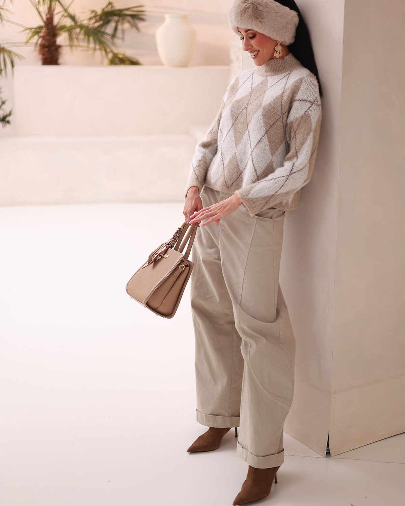
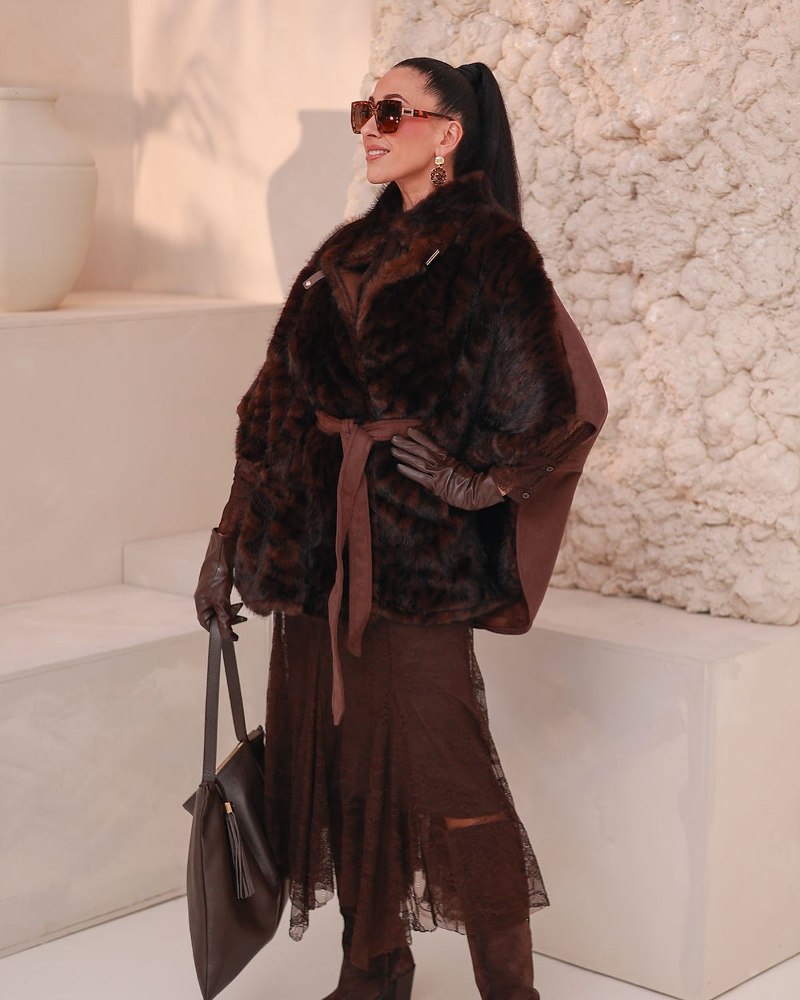
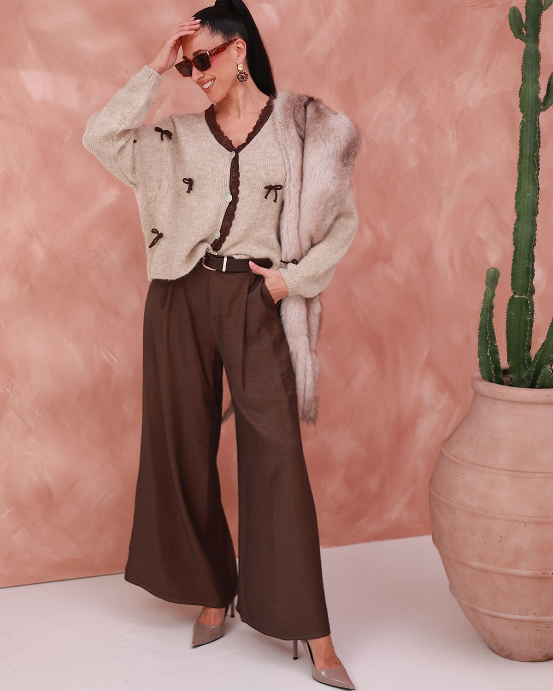
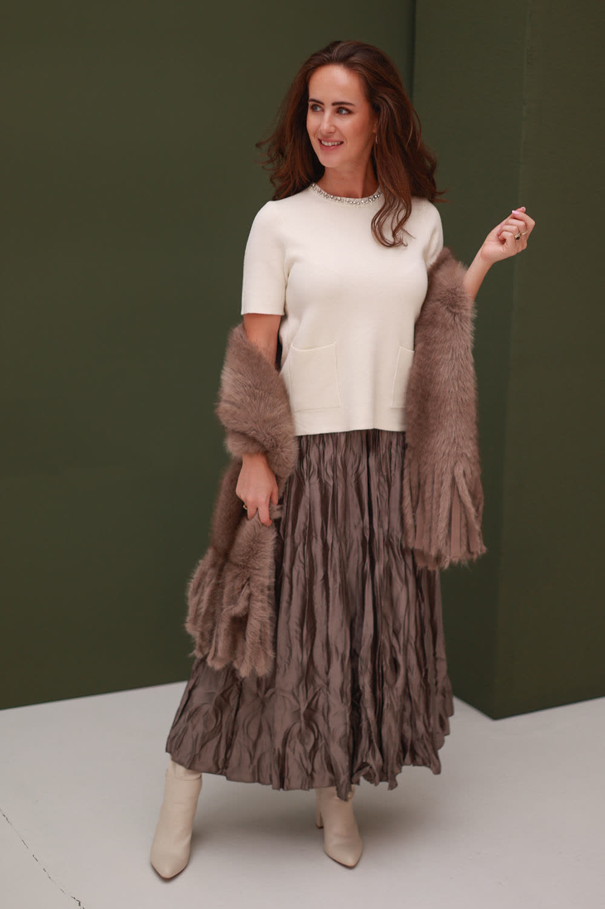
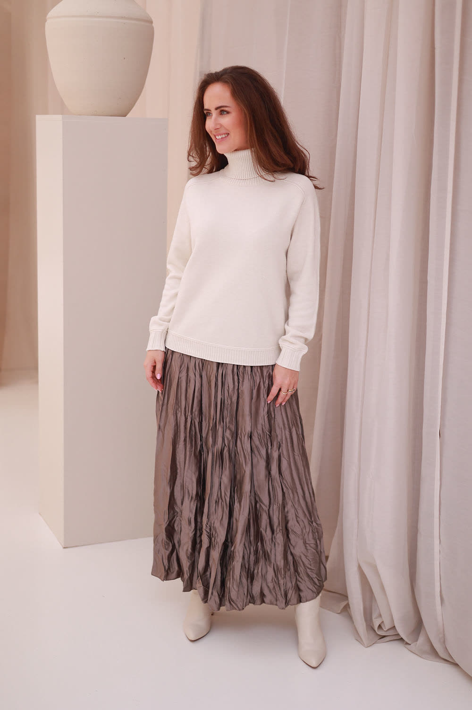
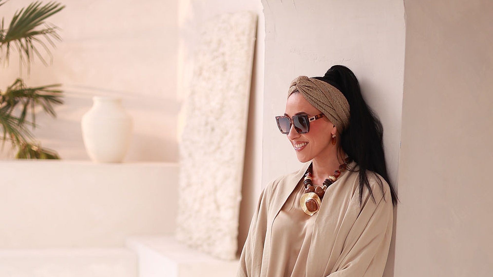
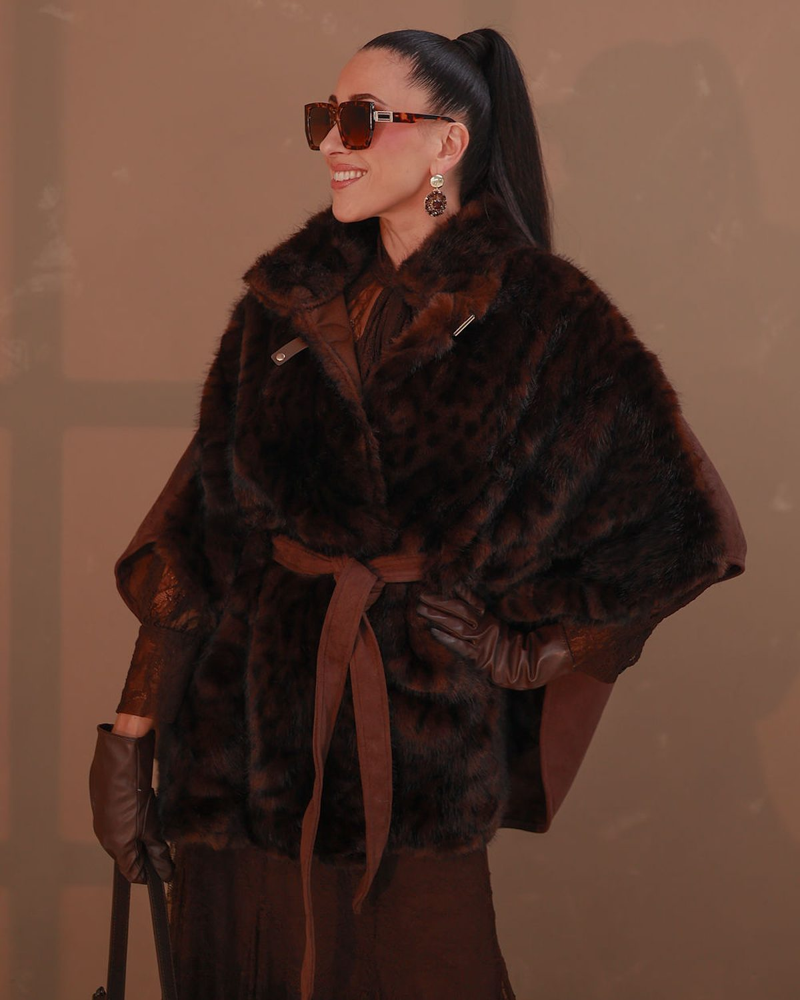
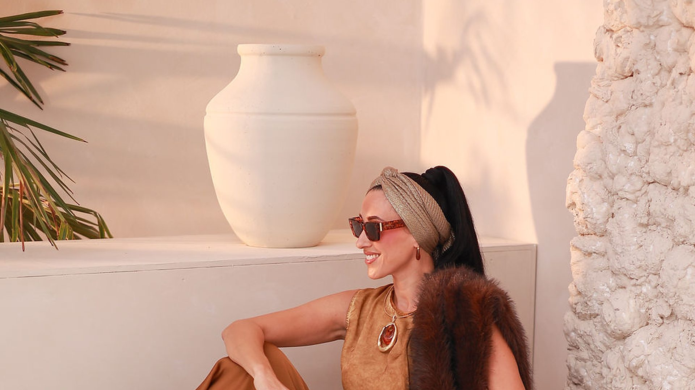

Een breed scala aan sets, opgebouwd en inbegrepen.
Sets in zachte mediterrane tinten, van warm crème en terracotta tot diep olijfgroen. Er staan standaard meerdere grote sets en achtergronden opgesteld, die je tegelijkertijd kunt gebruiken. Elke set is meer dan één hoek: er zitten meerdere plekken en camerahoeken in, bij de grote sets wel acht tot tien. Samen zijn dat tientallen shootopties, dus je zit nooit vast aan één plek of één shot. Er is geen opbouw nodig en geen meerprijs: al deze sets zitten in je dagprijs. Per set stellen we het licht vooraf in op wat je bij je aanvraag doorgeeft.
Mediterrane omgeving
Inbegrepen bij de prijsMediterrane bogen, treden en sokkels in warme crèmekleuren, met amforen. De treden en sokkels geven hoogteverschil: om op te zitten, op te staan of producten op neer te zetten.
- Plekken
- Meerdere plekken en camerahoeken in deze set; je zit niet vast aan één shot.
- Wat er staat
- Mediterrane bogen, treden en sokkels in warme crèmekleuren, amforen, witte vloer.
- Licht dat goed werkt
- Ochtendzon, voor scherpe schaduwen over de treden. Moet de kleur kloppen: neutraal daglicht.


Terracotta achterwand
Inbegrepen bij de prijsEen achterwand in warm terracotta, met terracotta amforen en een breed scala aan props en accessoires. De kleur zit in de wand zelf: je hoeft niets op te hangen.
- Plekken
- Meerdere plekken en camerahoeken in deze set; je zit niet vast aan één shot.
- Wat er staat
- Achterwand in warm terracotta, terracotta amforen, props en accessoires, witte vloer.
- Licht dat goed werkt
- Neutraal daglicht houdt de wandkleur zoals hij is. Avondlicht maakt het geheel warmer en zachter.

Olijfgroen
Inbegrepen bij de prijsDiep olijfgroen, met een witte vloer. Het donkere groen geeft contrast: lichte en warme kleuren komen er duidelijk tegen af.
- Plekken
- Meerdere plekken en camerahoeken in deze set; je zit niet vast aan één shot.
- Wat er staat
- Diep olijfgroene wanden, witte vloer.
- Licht dat goed werkt
- Neutraal daglicht, voor kleurgetrouwe beelden tegen het groen. Wil je tekening op de wand: een raamschaduw met de projector.

Zacht mediterraans
Inbegrepen bij de prijsZacht, lichtdoorlatend linnen, met een sokkel en een amfoor. Een rustige, neutrale achtergrond: de aandacht blijft bij je product.
- Plekken
- Meerdere plekken en camerahoeken in deze set; je zit niet vast aan één shot.
- Wat er staat
- Lichtdoorlatende linnen gordijnen, een sokkel met amfoor, witte vloer.
- Licht dat goed werkt
- Avondlicht, warmer en zachter. Of neutraal daglicht voor een lichte, heldere set.

Grote extra set-ups
€299 per set-upNaast de vaste sets bouwen we grotere set-ups voor je op, bijvoorbeeld een gang van witte zuilen en sokkels met amforen onder een linnen doek. Ze staan niet vast in de fotostudio: wij bouwen ze voor je op tijdens je lunch.
Zo werkt het
- Jij luncht. Wij bouwen je extra set-up op.
- Je komt terug en staat erop. Je team heeft niet op de opbouw gewacht.
Te kiezen bij de Productiedag. €299 per set-up, excl. btw.
Extra set-up kiezenLicht per set, vooraf ingesteld op jouw wens.
Geef bij je aanvraag per set door welk licht je wilt. Wij stellen het in voordat je binnenkomt. Wissel je van set of wil je iets anders? Je mag het licht zelf aanpassen zoals jij het wilt: dimmen, de kleurtemperatuur veranderen, een lamp anders richten of een andere lichtvormer gebruiken.

Daglicht, neutraal
Voorbeeld5500–5600 K. Kleuren komen op beeld zoals ze zijn. De keuze als de kleur van je product moet kloppen.

Avondlicht
VoorbeeldWarmer en zachter licht, met minder harde schaduwen dan de ochtendzon.
Raamschaduw
VoorbeeldMet de projector zetten we een raamkozijn of een patroon op de wand.

Ochtendzon
VoorbeeldLaag, warm licht met scherpe schaduwen. Geeft diepte aan treden, sokkels en wanden.
Nanlite Only Studio met continu licht. Flitsers heb je niet nodig.
- Nanlite Only Studio
- Al het licht in de studio is van Nanlite, dus de kleuren van de lampen sluiten perfect op elkaar aan.
- Lampen
- 5× Nanlite FC-500B, 4× Nanlite FC-300B en 1× Nanlite FC-720B, allemaal bi-colour 2700–6500 K.
- Lichtvormers
- Een fresnellens, softboxen, lantaarnsoftboxen en softboxen met grid.
- Projector
- Nanlite-projector met lenzen in verschillende graden en veel gobo’s, voor een raamschaduw of een patroon.
- Zelf aanpassen
- Ja. Wij zetten het licht klaar; daarna mag je het zelf aanpassen: dimmen, kleurtemperatuur, richten, lichtvormers.
- Flitsers
- Niet nodig: het licht is continu en we zetten het op elke plek in de fotostudio goed. Wil je er toch mee werken, dan kun je ze meenemen.
- De hele dag gelijk
- Anders dan in een daglichtstudio hangt het licht niet af van het weer of van het uur. Het blijft gelijk, tenzij jij iets wilt aanpassen.
Welke sets wil je gebruiken?
Geef het door bij je aanvraag, met het licht dat je per set wilt. Wij zetten alles klaar.
Vrijblijvend · je betaalt nu niets · bevestiging binnen één werkdag